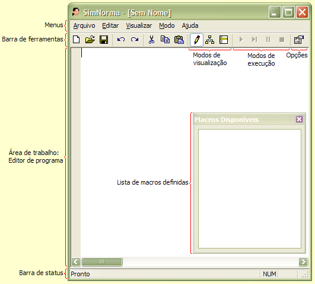
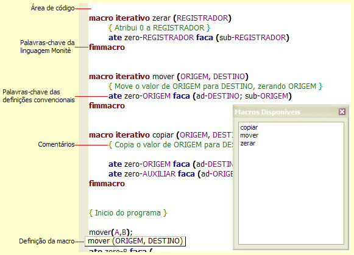
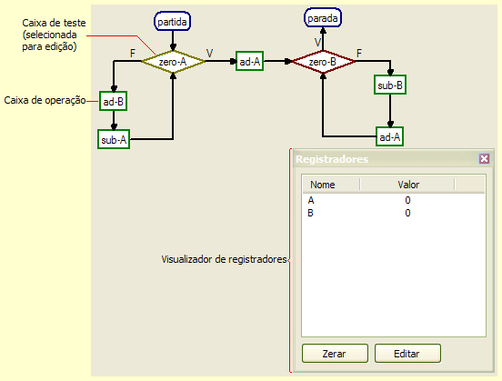
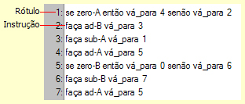
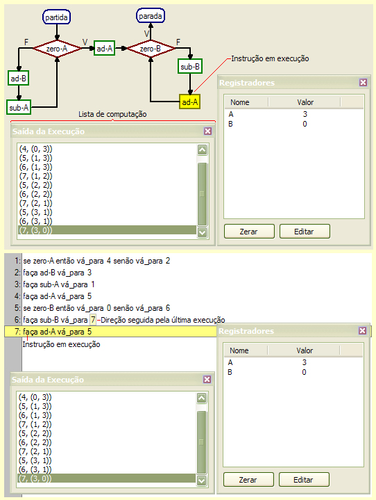
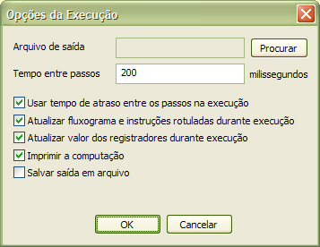

|
Guia do Ambiente |
|---|
Esta seção contém descrições e exemplos que ajudam o usuário a usar as funções disponíveis na interface do SimNorma.
Quando você abrir o SimNorma, será exibida uma janela semelhante à ilustrada abaixo:

Os elementos que compõem esta janela são:
Menus: permitem o acesso pelo teclado às funções disponíveis no programa.
Barras de ferramentas: permitem o acesso pelo mouse às funções disponíveis no programa.
Área de trabalho: apresenta o programa no modo de visualização atual. No exemplo acima, o modo atual é o modo de edição, e a área de trabalho exibe o editor de programa. A área de trabalho também pode apresentar o modo fluxograma e o modo de instruções rotuladas.
Barra de status: exibe informações sobre os itens apontados e a as ações executadas pelo simulador.
Lista de macros definidas: informa as macros reconhecidas pelo interpretador de código. Consulte-a para saber quais macros podem ser usadas no seu programa. Se uma biblioteca de macros for modificada, a lista não será automaticamente atualizada; para que isso ocorra, clique no menu Editar e escolha Atualizar.
Ao selecionar o modo de edição, a área de trabalho passa a apresentar o programa na linguagem Monitè. Essa região tem um aspecto semelhante ao exibido no exemplo abaixo:

A dica da definição da macro é exibida toda vez que um ( é inserido após um nome de macro. Para obter mais informações sobre os elementos destacados no editor, consulte a Referência da Linguagem Monitè.
Quando o programa estiver concluído, você pode selecionar o modo de fluxograma. O SimNorma, então, tentará interpretar o programa fornecido e avisará se encontrar algum erro. Caso nenhum erro seja encontrado, a área de trabalho exibirá um esquema similar ao exemplo abaixo:

Você
pode mover qualquer caixa de
instrução
(operação ou teste). Para isso, basta trazer o cursor
sobre a caixa que você deseja mover, clicar e arrastar a caixa
até a posição desejada.
A qualquer momento, é possível modificar o valor
individual dos registradores da máquina Norma. Isso pode ser
feito de duas maneiras:
selecione o registrador e clique sobre o botão Editar no Visualizador de Registradores; ou
dê dois cliques sobre o registrador.
Quando o programa estiver concluído, você pode selecionar o modo de instruções rotuladas. O SimNorma, então, tentará interpretar o programa fornecido e avisará se encontrar algum erro. Caso nenhum erro seja encontrado, a área de trabalho exibirá um esquema similar ao exemplo abaixo:

Quando o programa estiver
concluído, você poderá executá-lo alternando
para o modo fluxograma ou para o modo de instruções
rotuladas. A execução pode ser controlada pelos
botões de execução na barra
de ferramentas ou pelos comandos de execução no menu Modo. Normalmente, as
instruções em execução são
demarcadas pelos visualizadores e os registradores são
atualizados ao mesmo tempo, mas estas opções podem ser
configuradas. [Veja como]
Durante uma execução, os visualizadores
apresentarão um aspecto similar ao do exemplo abaixo:

Programadores experientes freqüentemente precisarão executar grandes computações. Para evitar que essas computações demorem muito tempo, você deve configurar as opções da execução. Para isso, clique no menu Modo e escolha a opção Opções da Execução. O SimNorma exibirá uma janela similar à reproduzida abaixo:

Os itens dessa janela determinam:
Usar tempo de atraso entre os passos na execução: se esta opção estiver marcada, força o simulador a esperar um tempo determinado antes de executar o próximo passo da computação em uma execução direta. Para modificar este tempo, altere o valor em Tempo entre passos. Desmarque esta opção para simular o programa na velocidade máxima.
Atualizar fluxograma e instruções rotuladas durante execução: se esta opção estiver marcada, a caixa de instrução (no modo fluxograma) ou o rótulo de instrução (no modo de instruções rotuladas) correspondente à instrução em execução recebe um realce de cor para indicar o comportamento do simulador. Desmarque esta opção para evitar que a reconstrução da imagem atrase a computação.
Atualizar valor dos registradores durante execução: se esta opção estiver marcada, o valor dos registradores é automaticamente atualizado a cada instrução. Desmarque esta opção para evitar que a reconstrução da imagem atrase a computação.
Imprimir a computação: se esta opção estiver marcada, instrui o simulador a exibir na Saída da Execução uma listagem com a computação produzida pelo programa. Desmarque esta opção se a computação for muito longa ou se você estiver interessado apenas na função computada.
Salvar saída em arquivo: se esta opção estiver marcada, instrui o simulador a gravar o texto exibido na Saída da Execução num arquivo. Para escolher o nome do arquivo, clique em Procurar, escolha a pasta desejada e digite um nome para o arquivo. Marque esta opção se desejar exportar os dados para utilização em outras aplicações.